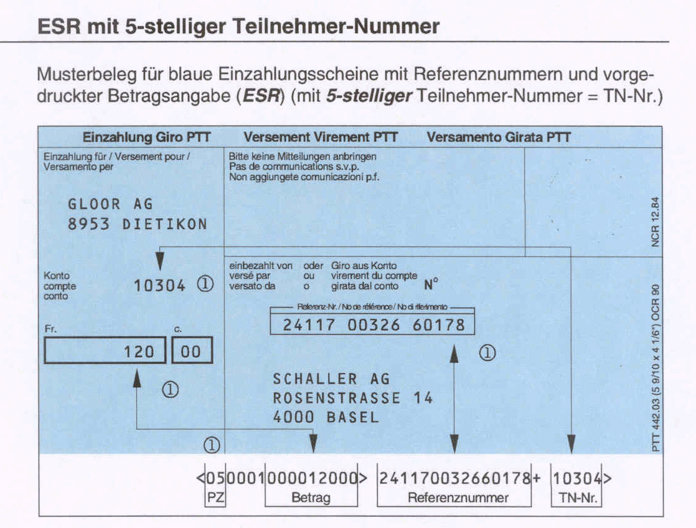
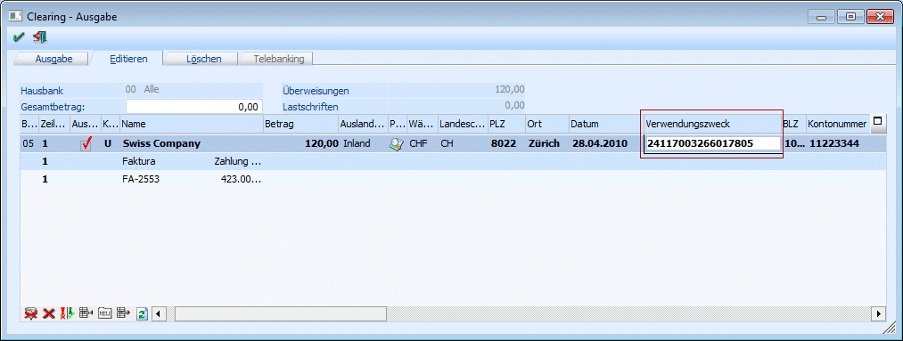
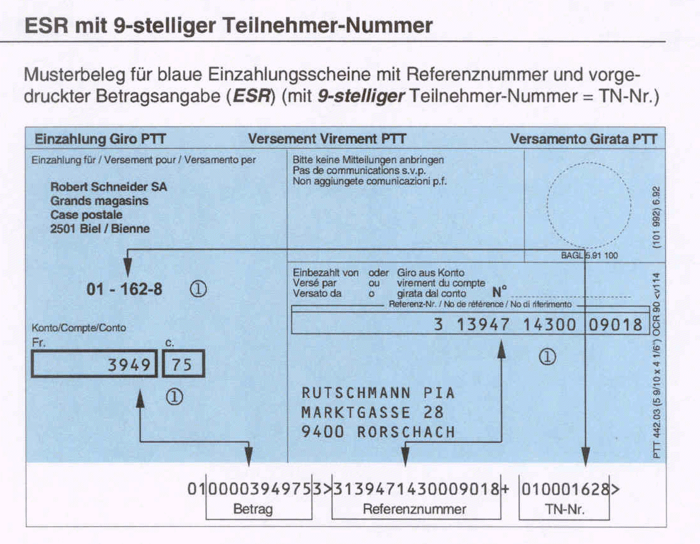
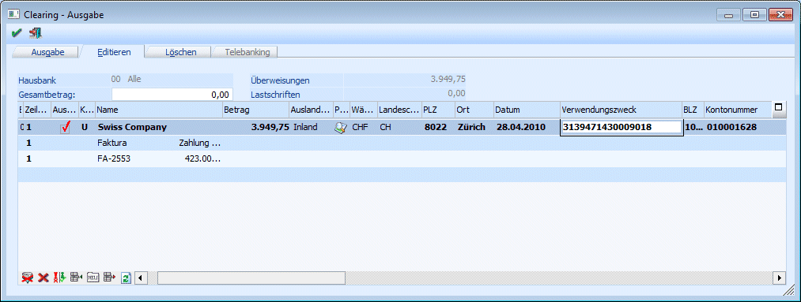

Bei der ESR-Zahlung - Einzahlungsschein mit Referenz-Nr. (TA826) - wird wieder unterschieden zwischen:
ü ESR mit 5-stelliger Teilnehmer-Nummer und
ü ESR mit 9-stelliger Teilnehmer-Nummer.
ESR mit 5-stelliger Teilnehmer-Nummer

Damit die benötigten Daten auch in die Clearing-Datei mitübergeben werden, muss hier Folgendes beachtet werden:
Ø TN-Nr.
Bei der TN-Nr. handelt es sich um die Bank-Kontonummer des Empfängers.
Diese sollte auch im Kontenstamm (Personenkonto) unter Bank-Kontonummer hinterlegt werden (oder muss ansonsten nachträglich im "Clearing editieren" nachgeführt werden).
Ø Referenznummer
Um auch die Referenznummer in die Clearing-Datei zu übergeben, muss diese im Feld "Verwendungszweck" hinterlegt werden.

Achtung
Zusätzlich zur Referenznummer MUSS auch die Prüfziffer (PZ) mitübergeben werden.
Diese muss direkt an die Referenznummer angefügt werden!
ESR mit 9-stelliger Teilnehmer-Nummer

Damit die benötigten Daten in die Clearing-Datei mitübergeben werden, muss hierbei Folgendes beachtet werden:
Ø TN-Nr.
Bei der TN-Nr. handelt es sich um die Bank-Kontonummer des Empfängers.
Diese sollte im Kontenstamm (Personenkonto) unter Bank-Kontonummer hinterlegt werden (oder muss ansonsten nachträglich im "Clearing editieren" nachgeführt werden).
Ø Referenznummer
Um die Referenznummer in die Clearing-Datei zu übergeben, muss diese im Feld "Verwendungszweck" hinterlegt werden.
